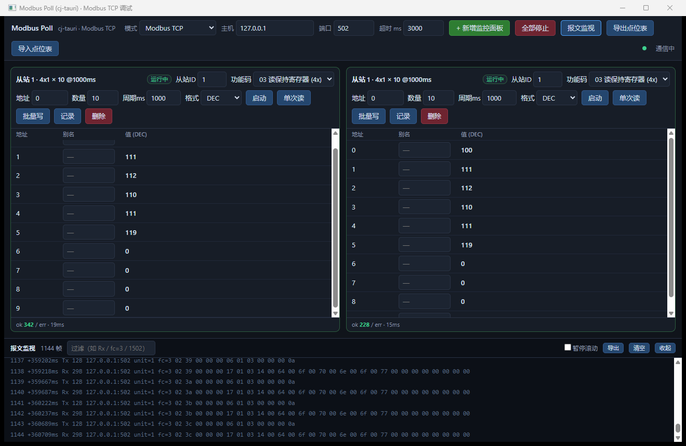
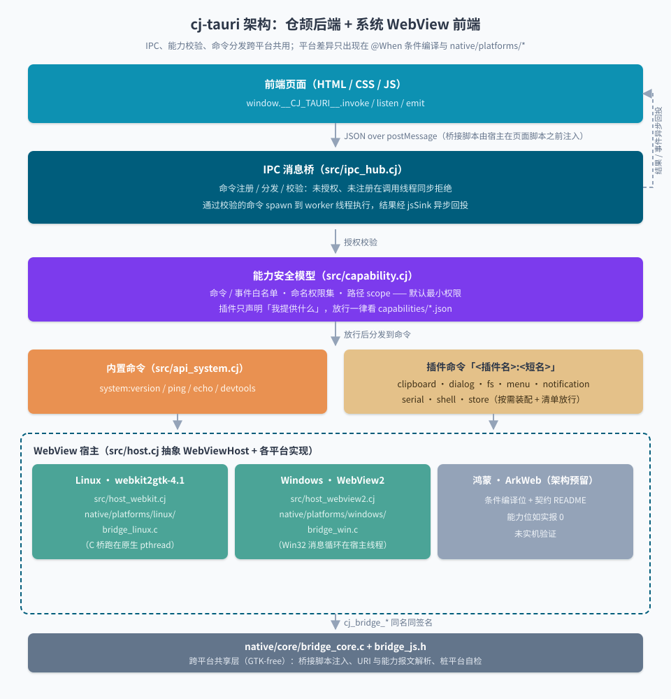
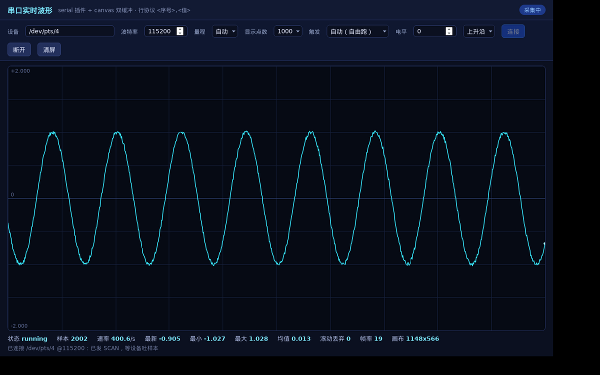
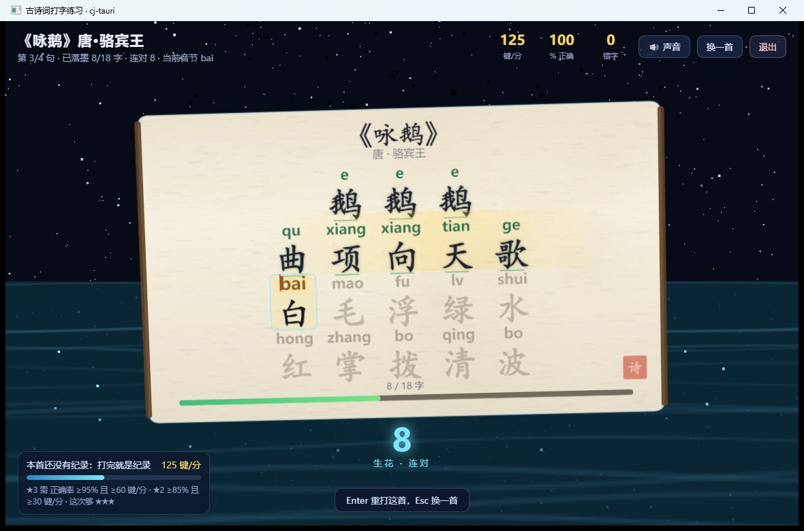
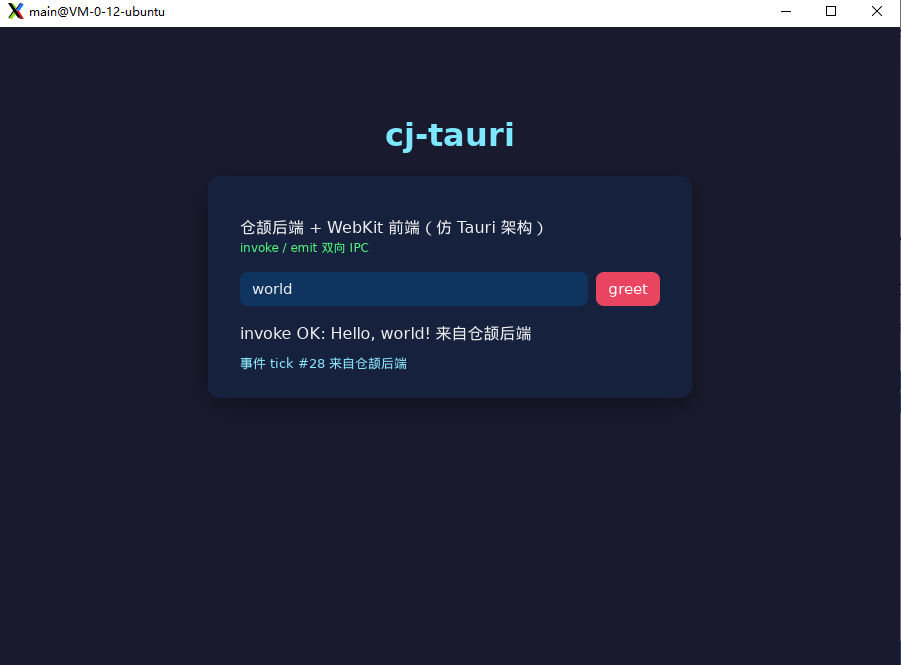
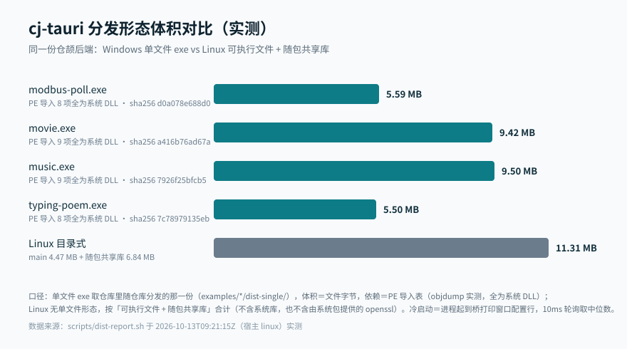

WebView 宿主
开原生窗口、在 document-start 注入桥接脚本，不捆绑 Chromium。Linux 走 WebKitGTK 4.1、 Windows 走 WebView2、鸿蒙 ArkWeb 预留架构位；菜单、文件拖入、原生对话框这类宿主能力 一律赶在页面加载前定稿。
cj-tauri 就是仓颉语言里的 Tauri：后端静态编译成原生可执行文件，前端跑在系统 WebView里 （Windows 走 WebView2、Linux 走 WebKitGTK），中间是一条 IPC 双向桥加一套能力白名单。 不捆绑 Chromium，产物 5.5–9.5 MB，双击即用。
工程现状：下面每一条都取过实机证据

与 Tauri 对应的三件套：宿主负责开窗与注入，桥负责一问一答与事件回投，能力模型负责「谁能调什么」。
平台差异被压到两处——仓颉侧 @When 条件编译与 C 桥的 native/bridge_*.c，
其余全部跨平台共用。
开原生窗口、在 document-start 注入桥接脚本，不捆绑 Chromium。Linux 走 WebKitGTK 4.1、 Windows 走 WebView2、鸿蒙 ArkWeb 预留架构位；菜单、文件拖入、原生对话框这类宿主能力 一律赶在页面加载前定稿。
前端只经 window.__CJ_TAURI__ 的 invoke / listen / emit
与后端对话（形状对齐 @tauri-apps/api）。命令在调用线程只做校验，通过后派到 worker 线程执行，
结果按 promise id 回投——慢命令不会把宿主 UI 钉住。
命令与事件必须写进 capabilities/*.json 才放行：默认最小权限，插件只声明「我提供什么」、
不自动放行自己。之上还有命名权限集与路径 scope（先 deny 后 allow，匹配前先规范化路径，
越界被拒会在桥 stderr 留证据）。
下面没有「计划支持」：体积是对着随仓库分发的产物量的，依赖是从 PE 导入表读出来的， 示例跑完会自己给自己下结论。
仓颉无虚拟机，运行时就静态链在产物里——从没装过 SDK 的机器也能直接跑。协议层两百行左右，可审计。
四份产物实测 5.50 / 5.59 / 9.42 / 9.50 MB，PE 导入表里全是 Windows 系统 DLL——
第三方运行时（msvcp* / vcruntime* / libgcc* / libwinpthread*）一个都没有。
清单里没声明的命令一律拒绝，而且拒绝会留日志、不静默。页面可控的路径参数可以钉在工作区内 （allow / deny 通配 + 变量），先判 deny 再判 allow。
十个官方插件：文件、原生对话框、子进程、串口、键值存储、剪贴板、通知、原生菜单、MQTT、Redis。 插件声明命令、事件与前端 shim，真正放不放行仍由清单说了算。
桥逐行写 stderr，页面把自检断言回投，每个示例都带一条无人值守 E2E 入口并把证据 JSON 落进
dist/e2e-evidence/。「日志里没有错误行」从不当作成功。
一条 CLI：create / dev / build / run / info / doctor，npx cj-tauri 即可用。
模板覆盖零 Node 的 HTML、Vue 3、React 18；dev 接管 Vite dev server，
HMR 在原生窗口里生效；doctor 逐行说明缺什么、怎么补。
页面看不到任何平台代码：它只 postMessage 一份 JSON，桥负责校验，worker 执行 handler， 结果按 promise id 回投。平台相关的代码只可能在两处出现，下面这张图随仓库版本化，不会和实现对不上。

docs/images/architecture.svg（与代码同仓版本化）
普通 HTML/CSS/JS（用模板时就是 Vue / React）。注入的 window.__CJ_TAURI__ 上挂
invoke / listen / emit，形状对齐 @tauri-apps/api。
src/ipc_hub.cj 同步做「注册 / 授权」两项校验，通过后把 handler 派到 worker 线程。
未注册或未授权当场拒绝，并在 stderr 留下可 grep 的一行。
src/capability.cj 启动时扫 capabilities/ 下的所有 json：命令、
事件、命名权限集、路径 scope 全在共享层解析，两个平台不各判一份。
Linux 的每个 GTK/WebKit 调用都在 C 桥创建的原生 pthread 里执行（仓颉轻量线程的堆上协程栈会被
JSC 的栈边界校验 abort）；Windows 在宿主线程跑 WebView2 消息循环。两平台导出同一套
cj_bridge_* 名字，上层没有平台分叉的调用点。
仓颉侧写一个命令、清单里放行一行、页面上 invoke 一次——没有别的仪式，也不用改构建脚本。
// 1) 实现命令：handle 在 worker 线程上执行，返回的 JsonValue 回投给页面 public class GreetCommand <: CommandHandler { public func handle(cmd: String, args: JsonObject, ipc: IpcContext): JsonValue { return JsonString("Hello, ${argString(args, "name", "world")}!") } } main(): Int64 { // 2) 装配：建窗口 + 注册命令；capabilities/ 由 run() 自动扫描 let app = TauriApp() .window(WindowConfig("hello", 1000, 700)) .register("greet", GreetCommand()) // 3) 启动：run() 自己不返回，窗口关闭后收尾 app.run(HTML) return 0 }
{
"identifier": "default",
"windows": ["main"],
// 命令级白名单：没写在这里的命令一律 command not allowed
"commands": ["report", "notes:env", "system:version"],
"events": [],
// 命名权限集：一次放行一组，与明文写法同权（集声明 ≠ 放行）
"permissions": ["fs:default", "store:default"],
// 路径 scope：命令放行 ≠ 参数放行；先判 deny，再判 allow
"scopes": {
"fs": {
"allow": ["$CWD/notes", "$CWD/notes/**"],
"deny": ["**/*.secret.md"]
}
}
}
// 桥在 document-start 注入，页面脚本执行时就已经存在； // 应用侧仍建议等一次（模板里的 waitForBridge），免得构建形态不同步。 const cj = window.__CJ_TAURI__; // 调后端命令：与 @tauri-apps/api 同形，返回 Promise const msg = await cj.invoke("greet", { name: "仓颉" }); // 订阅后端事件（事件名同样要在能力清单的 events 里声明） cj.listen("tick", e => { document.querySelector("#out").textContent = e.data; }); // 插件自带前端命名空间，例如原生文件对话框： const picked = await cj.dialog.open({ filter: "文本文件|*.txt|所有文件|*.*" });
# 免安装脚手架：create 出来的工程自带能力清单与 GUI 子系统开关 npx cj-tauri create myapp cd myapp # 开发：接管 Vite dev server（Vue / React 模板），HMR 在原生窗口里生效 npx cj-tauri dev # 换机器第一件事：doctor 逐行说缺什么、怎么补 npx cj-tauri doctor [ok] cangjie sdk 1.2.0 /opt/cangjie/cangjie [ok] stdx found $CANGJIE_STDX [miss] webkit2gtk-4.1 sudo apt install libwebkit2gtk-4.1-dev
插件只声明「我提供什么」（命令、事件、前端命名空间），放不放行仍由能力清单说了算。 其中 MQTT 与 Redis 的协议是纯仓颉实现，想评估这个框架的工程底子可以直接读它们。
fs
读 / 写 / 列目录 / 删除，受路径 scope 约束
dialog
原生打开、保存、消息框
shell
打开链接、子进程（argv 直传，不过 shell）
serial
串口收发，带探针自检闭环
store
键值存储，写盘走 tmp + rename
clipboard
系统剪贴板读写
notification
系统通知（Linux 实机取证，Windows 桩如实报）
menu
原生菜单栏，点选事件回投前端
mqtt
MQTT 3.1.1，协议纯仓颉实现
redis
RESP2 客户端，纯仓颉实现
三层控制：命令 / 事件白名单、命名权限集（fs:readonly、sqlite:default …）、
以及按插件的路径 scope（allow / deny 通配）。少一层调用就不发生——而且拒绝会打上可 grep 的前缀，
不静默失败。
不是 hello world 拼盘：Modbus 调试工具、串口示波器、音乐播放器、SQLite 浏览器、HTTP 客户端、MQTT 调试台…… 每个都带自检脚本，跑完自己下结论，E2E 入口把证据写成 JSON。
多面板并行监控、读写 FC 01-04/05/06/15/16、报文监视逐帧滚动、数据记录 CSV——对标 Modbus Poll 并补齐其痛点。
examples/modbus-poll · 5.59 MB single exe
串口插件解出 400 Hz 样本流，canvas 双缓冲自绘；页面自算速率、上穿与丢帧——Linux 实测 404.2 样本/s。
examples/serial-waveform · verdict=ok榜单、歌单、收藏与同步歌词，4 套主题色。封面由宿主带正确 Referer 取回并缩略后再交给页面。
examples/music · store plugin榜单、搜索、详情与播放，所有请求都由仓颉侧发出，页面零 fetch——想看清「网络请求放在后端」长什么样，看它。
examples/movie · 9.42 MB single exe
108 首诗逐字拼音、three.js 3D 卡面、404 行自检断言。也是它抓出了「WebView2 视口必须每帧自检」这个坑。
examples/typing-poem · three.js r160
一次 invoke、一路事件推送，外加一次故意越权调用把拒绝长什么样摊开。想一屏看完 IPC 全路径，先读它。
examples/hello · command not allowedlibsqlite3（仓库首例），ATTACH 由 authorizer 按语句拒innerHTML，工作区由路径 scope 钉死仓颉是提前编译的，没有虚拟机要预热、产物里也没有解释器。下面这些数字来自随仓库分发的产物与桥自己的 stderr 日志，口径写在文档里，连还没量到的那一格也照实标出来。
5.50–9.50 MB
四份随仓库分发的单文件 exe（typing-poem / modbus-poll / movie / music）
0 个第三方 DLL
从 PE 导入表读出来的——只有 Windows 系统 DLL，没有 msvcp*/vcruntime*/libgcc*
54ms 中位数
Linux 冷启动（进程启动 → 桥打出窗口标题行），3 次取样 48/54/57 ms
261 单测 / 8 E2E
仓颉侧单元测试 + 共享 C 核心的桩平台自检，另有 8 条无人值守 E2E 入口

scripts/dist-report.sh 用同一份实测数据生成——图和数不会对不上。还没量到的：Windows 侧冷启动（本机是 Linux，这一格就空着，不拿 Linux 的数字替它说话）， 以及 Windows 侧的剪贴板 / 通知 / 串口能力位。方法已经写进脚本，缺的是机器。
需要仓颉 SDK 与 stdx；Windows 另需 mingw gcc 与 WebView2 运行时，Linux 需要
libwebkit2gtk-4.1-dev。缺东西时 doctor 会点名并给出安装命令，
而不是丢一段堆栈给你。
换机器第一件事跑一次：框架、工程、stdx、SDK、cjpm、C 桥逐行给出结论。
$ npx cj-tauri doctor [ok] cangjie sdk 1.2.0 /opt/cangjie/cangjie [ok] cjpm found [ok] c bridge libcjtbridge.so (22 exports) [miss] webkit2gtk-4.1 sudo apt install libwebkit2gtk-4.1-dev
三个模板：零 Node 的内联 HTML、Vue 3、React 18。生成的工程自带能力清单，GUI 子系统开关也已配好 （双击不弹控制台黑窗）。
$ npx cj-tauri create myapp scaffolding app (inline HTML template) ... capabilities/default.json written next: cd myapp && npx cj-tauri dev
dev 对 Vue / React 模板会接管 Vite dev server，HMR 直接在原生窗口里生效；
build / run 如你所想，info --json 把装配好的插件清单打成 JSON。
$ npx cj-tauri dev # HMR in the native window $ npx cj-tauri build # cjpm build + packaging $ npx cj-tauri run # launch from the project root $ npx cj-tauri info --json # resolved plugins / commands
还没装 SDK？也可以直接从仓库拿一个预构建好的 Windows 单文件工具双击运行——那条路既不需要 Node 也不需要 SDK。
能力表只有照实写才有用，所以这一版把不好看的那几格留着，不四舍五入。
Windows（WebView2）
实机跑通：窗口、IPC、能力校验、原生菜单（点选取证）、文件拖入、单文件打包。
Linux（WebKitGTK）
实机跑通，含外部回读剪贴板、会话总线上实收通知；8 条 E2E 入口都在这里跑。
鸿蒙 ArkWeb
架构预留位：契约 README 与脚手架先行，能力位如实报 0，禁假实现。
macOS
没做过；也没有为它发明一个未验证的平台标识。
系统托盘
用户裁定暂缓：Linux 侧要引 libayatana-appindicator3，Windows 侧也未做，能力位 tray=0。
每个不显然的选择——Linux 宿主为什么跑在 C pthread 上、托盘为什么暂缓、路径 scope 怎么规范化—— 在仓库里都有一段说明和一个决策编号。